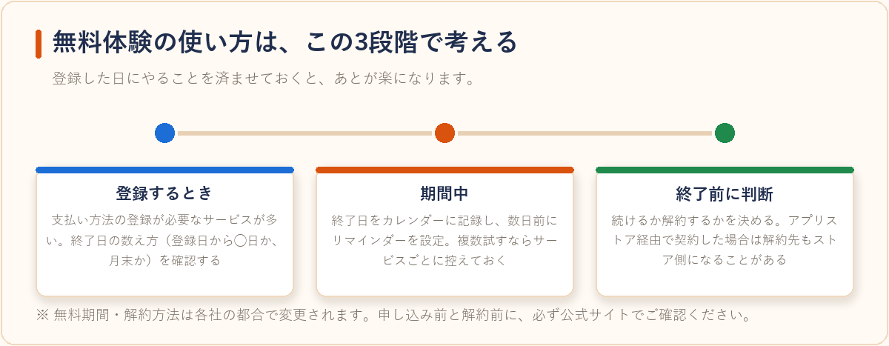

動画配信サービスの無料体験まとめ比較【2026年版】
2026-07-27 更新
動画配信サービス（VOD）は各社が無料体験期間を用意しており、実質無料でお試しできるのが魅力です。ここでは主要サービスの特徴を、公式発表の情報をもとに客観的にまとめました。契約前の比較検討にお役立てください。
比較のポイント
- 無料体験の有無・期間
- 月額料金（税込目安）
- 配信作品の傾向
- ポイント付与の有無
主要サービスの特徴
| サービス | 特徴 | 向いている人 |
|---|---|---|
| U-NEXT | 作品数が豊富で雑誌読み放題も付帯。月額ポイントが付与されるプランがある。 | 映画・ドラマ・雑誌までまとめて楽しみたい人 |
| DMM TV | アニメ作品のラインナップに強みがあり、他のDMMサービスとの連携もある。 | アニメを中心に見たい人 |
| Hulu | 国内ドラマ・バラエティが豊富で、日テレ系コンテンツに強い。 | 国内ドラマ・バラエティ好きな人 |
| Amazonプライムビデオ | 配送特典など動画以外のプライム特典もまとめて利用できる。 | ネットショッピングもよく使う人 |
| ABEMAプレミアム | ニュース・恋愛リアリティ・アニメなどABEMAオリジナル作品が見放題。地上波にはない独自コンテンツが多い。 | オリジナル番組やリアリティ番組を見たい人 |
| WOWOWオンデマンド | WOWOW制作のドラマ・映画・スポーツ中継（プロ野球・大相撲等）に強み。地上波にない独自ドラマも多い。 | WOWOW制作ドラマやスポーツ中継を見たい人 |
注意：無料体験の期間・料金・付帯サービスの内容は各社の都合で変更されることがあります。申し込み前に必ず公式サイトで最新の条件をご確認ください。
各サービスをもう少し詳しく
表だけでは伝わりにくい部分を、サービスごとにもう少し掘り下げて紹介します。
U-NEXTは動画配信サービスの中でも作品数の多さで知られており、映画・海外ドラマ・国内ドラマ・アニメと幅広いジャンルを1つのサービスでカバーできます。加えて雑誌の読み放題サービスが付帯しているプランもあり、動画と読書の両方をよく利用する人にとっては複数のサブスクを契約するより効率的になる場合があります。月額料金はやや高めの設定ですが、その分もらえるポイントを新作レンタルなどに充てられる仕組みがあるのも特徴です。
DMM TVはアニメ作品の充実度が特徴で、深夜アニメや過去シーズンのまとめ視聴がしやすい編成になっている傾向があります。DMMの他サービス（電子書籍・動画配信以外のコンテンツ等）を既に利用している人であれば、アカウントやポイントの管理が一元化できるメリットも考えられます。
Huluは日本テレビ系列の番組との連携が強みで、放送中のドラマやバラエティ番組を見逃してしまった時の受け皿として使われることが多いサービスです。国内番組を中心に視聴したい人にとっては、海外ドラマ・海外映画中心のサービスよりも「見たい番組が見つかりやすい」と感じやすい傾向があります。
Amazonプライムビデオは動画配信単体のサービスではなく、Amazonプライム会員特典の一部として提供されている点が大きな違いです。配送料無料などの通販特典と動画視聴を合わせて考えると、ネットショッピングをよく利用する人にとっては実質的なお得感が大きくなりやすいサービスといえます。
ABEMAプレミアムは地上波にはないオリジナル番組（恋愛リアリティ番組など）を中心に展開しており、無料の範囲でもリアルタイム配信を視聴できるのが特徴です。プレミアムに加入すると見逃し視聴やダウンロード視聴など、利便性に関わる機能が使えるようになります。
WOWOWオンデマンドは放送局WOWOWが制作するオリジナルドラマや、プロ野球・大相撲などのスポーツ中継に強みを持つサービスです。他のVODサービスではあまり扱われないジャンルの中継コンテンツを重視する人にとっては、選択肢として検討する価値があります。
目的別・選び方のポイント
VODサービスは作品の傾向や付帯サービスが各社で大きく異なるため、「何を優先したいか」で選ぶサービスが変わってきます。
- とにかく作品数・ジャンルの幅を優先したい：U-NEXTは映画・ドラマ・雑誌まで幅広くカバーしており、迷ったらまず候補に入れやすいサービスです。
- アニメを中心に見たい：DMM TVはアニメのラインナップに強く、他のDMM系サービスを使っている人とも相性が良い傾向があります。
- 国内ドラマ・バラエティをよく見る：Huluは日テレ系のコンテンツが豊富で、テレビ番組の見逃し視聴的な使い方をしたい人に向いています。
- 普段からネットショッピングも使う：Amazonプライムビデオは配送特典などプライム会員特典と一体になっているため、動画以外のメリットも含めてお得感を得やすいです。
- 他にはないオリジナル番組を見たい：ABEMAプレミアムは地上波にはないリアリティ番組やオリジナル企画が中心で、いわゆる「テレビっぽさ」を求めない人に向いています。
- スポーツ中継や本格ドラマを重視したい：WOWOWオンデマンドはプロ野球・大相撲などのスポーツ中継とWOWOW制作ドラマに強みがあり、映像作品にこだわりたい人向けです。
無料体験を使う時の注意点

- 無料期間内に解約すれば料金は発生しないが、解約手続きの期限は事前に確認する
- 支払い方法の登録が必要なサービスが多い
- 複数サービスを同時に試す場合は、それぞれの解約日を控えておくと安心
- 無料期間の終了日が「登録日から〇日後」なのか「登録した月の月末」なのか、サービスによって数え方が異なる場合がある
- スマホアプリ内課金（App Store／Google Play経由）で契約した場合、解約もアプリストア側の設定から行う必要があるケースがある
月額料金を無駄にしないための管理のコツ
VODサービスは月額料金が数百円〜2,000円程度と一つひとつは大きな金額に見えなくても、複数契約したまま忘れていると年間では意外な出費になります。スマホのカレンダーアプリに「無料期間終了日の2〜3日前」にリマインダーを設定しておく、契約中のサービス一覧をメモアプリにまとめておくといった簡単な管理だけでも、解約忘れによる無駄な支払いを防ぎやすくなります。
よくある質問
無料体験期間中に解約すれば本当に料金はかかりませんか？
多くのサービスで、無料体験期間内に解約手続きを完了すれば料金は発生しません。ただし「解約」と「退会」の手続きが別になっているサービスもあるため、マイページ上でどちらの操作が必要か確認しておくと安心です。
複数のVODサービスを同時に無料体験しても大丈夫ですか？
基本的には問題ありません。ただし管理するサービスが増えるほど解約忘れのリスクも上がるため、各サービスの体験開始日と解約期限をメモやカレンダーに控えておくことをおすすめします。
無料体験は誰でも利用できますか？
多くのサービスで「初めて利用する会員」を対象としており、過去に同じサービスを利用したことがある場合は対象外になることがあります。条件は各社で異なるため、申し込み前に公式サイトの利用条件を確認してください。
複数のサービスの無料期間だけを渡り歩くのは問題ありませんか？
各サービスの利用規約の範囲内であれば、無料期間中に解約すること自体は問題ありません。ただし短期間で登録・解約を繰り返すと、次回以降そのサービスの無料体験対象外になる場合があります。長期的に使いたいサービスが決まっている場合は、無理に渡り歩かず腰を据えて契約するのも一つの考え方です。